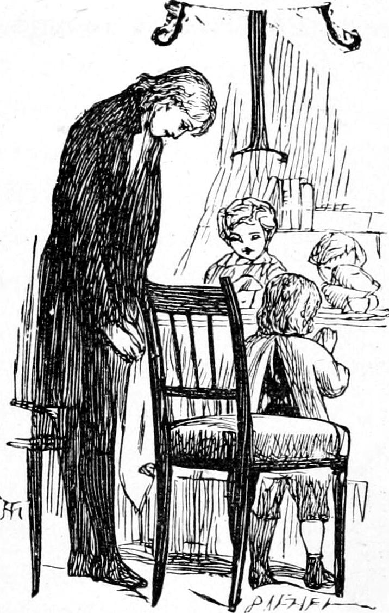
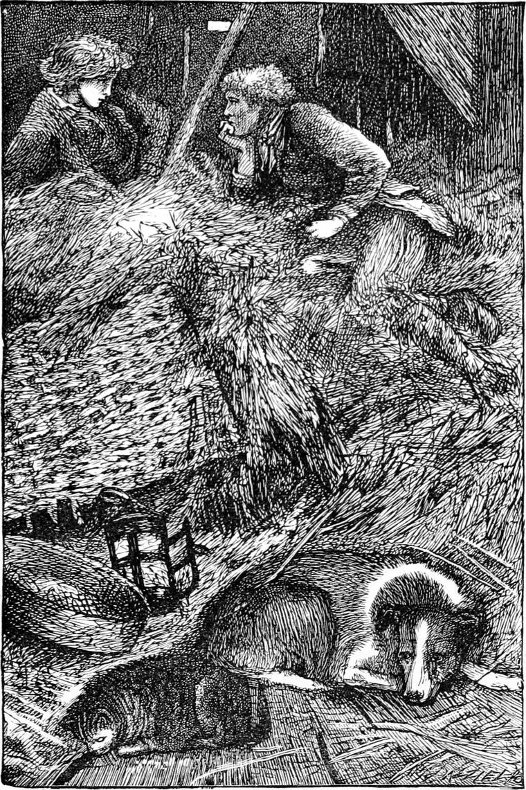

The next day, at breakfast, I told my father all the previous day’s adventures. Never since he had so kindly rescued me from the misery of wickedness had I concealed anything from him. He, on his part, while he gave us every freedom, expected us to speak frankly concerning our doings. To have been unwilling to let him know any of our proceedings would have simply argued that they were already disapproved of by ourselves, and no second instance of this had yet occurred with me. Hence it came that still as I grew older I seemed to come nearer to my father. He was to us like a wiser and more beautiful self over us,—a more enlightened conscience, as it were, ever lifting us up towards its own higher level.
This was Sunday; but he was not so strict in his ideas concerning the day as most of his parishioners. So long as we were sedate and orderly, and neither talked nor laughed too loud, he seldom interfered with our behaviour, or sought to alter the current of our conversation. I believe he did not, like some people, require or expect us to care about religious things as much as he did: we could not yet know as he did what they really were. But when any of the doings of the week were referred to on the Sunday, he was more strict, I think, than on other days, in bringing them, if they involved the smallest question, to the standard of right, to be judged, and approved or condemned thereby. I believe he thought that to order our ways was our best preparation for receiving higher instruction afterwards. For one thing, we should then, upon failure, feel the burden of it the more, and be the more ready to repent and seek the forgiveness of God, and that best help of his which at length makes a man good within himself.
He listened attentively to my story, seemed puzzled at the cry I had heard from the cottage, said nothing could have gone very wrong, or we should have heard of it, especially as Andrew had been to inquire, laughed over the apparition of Miss Adam, and my failure in rescuing Jamie Duff. He said, however, that I had no right to interefere with constituted authority—that Adam was put there to protect the trees, and if he had got hold of a harmless person, yet Jamie was certainly trespassing, and I ought to have been satisfied with Turkey’s way of looking at the matter.
I saw that my father was right, and a little further reflection convinced me that, although my conduct had a root in my regard for Jamie Duff, it had a deeper root in my regard for his sister, and one yet deeper in my regard for myself—for had I not longed to show off in her eyes? I suspect almost all silly actions have their root in selfishness, whether it take the form of vanity, of conceit, of greed, or of ambition.
While I was telling my tale, Mrs. Mitchell kept coming into the room oftener, and lingering longer, than usual. I did not think of this till afterwards. I said nothing about her, for I saw no occasion; but I do not doubt she was afraid I would, and wished to be at hand to defend herself. She was a little more friendly to me in church that day: she always sat beside little Davie.
When we came out, I saw Andrew, and hurried after him to hear how he had sped the night before. He told me he had found all perfectly quiet at the cottage, except the old woman’s cough, which was troublesome, and gave proof that she was alive, and probably as well as usual. He suggested now that the noise was all a fancy of mine—at which I was duly indignant, and desired to know if it was also Missy’s fancy that made her go off like a mad creature. He then returned to his former idea of the cock, and as this did not insult my dignity, I let it pass, leaning however myself to the notion of Wandering Willie’s pipes.
On the following Wednesday we had a half holiday, and before dinner I went to find Turkey at the farm. He met me in the yard, and took me into the barn.
“I want to speak to you, Ranald,” he said.
I remember so well how the barn looked that day. The upper half of one of the doors had a hole in it, and a long pencil of sunlight streamed in, and fell like a pool of glory upon a heap of yellow straw. So golden grew the straw beneath it, that the spot looked as if it were the source of the shine, and sent the slanting ray up and out of the hole in the door. We sat down beside it, I wondering why Turkey looked so serious and important, for it was not his wont.
“Ranald,” said Turkey, “I can’t bear that the master should have bad people about him.”

“What do you mean, Turkey?” I rejoined.
“I mean the Kelpie.”
“She’s a nasty thing, I know,” I answered. “But my father considers her a faithful servant.”
“That’s just where it is. She is not faithful. I’ve suspected her for a long time. She’s so rough and ill-tempered that she looks honest; but I shall be able to show her up yet. You wouldn’t call it honest to cheat the poor, would you?”
“I should think not. But what do you mean?”
“There must have been something to put old Eppie in such an ill-temper on Saturday, don’t you think?”
“I suppose she had had a sting from the Kelpie’s tongue.”
“No, Ranald, that’s not it. I had heard whispers going about; and last Saturday, after we came home from John Adam’s, and after I had told Elsie about Jamie, I ran up the street to old Eppie. You would have got nothing out of her, for she would not have liked to tell you; but she told me all about it.”
“What a creature you are, Turkey! Everybody tells you everything.”
“No, Ranald; I don’t think I am such a gossip as that. But when you have a chance, you ought to set right whatever you can. Right’s the only thing, Ranald.”
“But aren’t you afraid they’ll call you a meddler, Turkey? Not that I think so, for I’m sure if you do anything against anybody, it’s for some other body.”
“That would be no justification if I wasn’t in the right,” said Turkey. “But if I am, I’m willing to bear any blame that comes of it. And I wouldn’t meddle for anybody that could take care of himself. But neither old Eppie nor your father can do that: the one’s too poor, and the other too good.”
“I was wondering what you meant by saying my father couldn’t take care of himself.”
“He’s too good; he’s too good, Ranald. He believes in everybody. I wouldn’t have kept that Kelpie in my house half the time.”
“Did you ever say anything to Kirsty about her?”
“I did once; but she told me to mind my own business. Kirsty snubs me because I laugh at her stories. But Kirsty is as good as gold, and I wouldn’t mind if she boxed my ears—as indeed she’s done—many’s the time.”
“But what’s the Kelpie been doing to old Eppie?”
“First of all, Eppie has been playing her a trick.”
“Then she mustn’t complain.”
“Eppie’s was a lawful trick, though. The old women have been laying their old heads together—but to begin at the beginning: there has been for some time a growing conviction amongst the poor folk that the Kelpie never gives them an honest handful of meal when they go their rounds. But this was very hard to prove, and although they all suspected it, few of them were absolutely certain about it. So they resolved that some of them should go with empty bags. Every one of those found a full handful at the bottom. Still they were not satisfied. They said she was the one to take care what she was about. Thereupon old Eppie resolved to go with something at the bottom of her bag to look like a good quantity of meal already gathered. The moment the door was closed behind her—that was last Saturday—she peeped into the bag. Not one grain of meal was to be discovered. That was why she passed you muttering to herself and looking so angry. Now it will never do that the manse, of all places, should be the one where the poor people are cheated of their dues. But we roust have yet better proof than this before we can say anything.”
“Well, what do you mean to do, Turkey?” I asked. “Why does she do it, do you suppose? It’s not for the sake of saving my father’s meal, I should think.”
“No, she does something with it, and, I suppose, flatters herself she is not stealing—only saving it off the poor, and so making a right to it for herself. I can’t help thinking that her being out that same night had something to do with it. Did you ever know her go to see old Betty?”
“No, she doesn’t like her. I know that.”
“I’m not so sure. She pretends perhaps. But we’ll have a try. I think I can outwit her. She’s fair game, you know.”
“How? What? Do tell me, Turkey,” I cried, right eagerly.
“Not to-day. I will tell you by and by.”
He got up and went about his work.